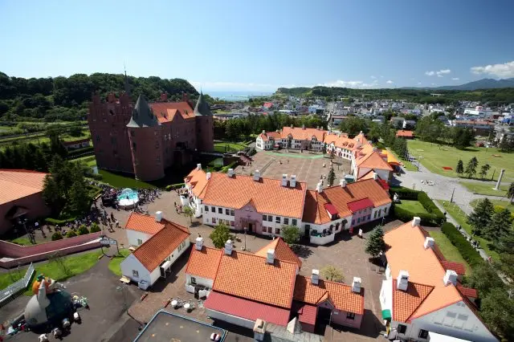

JX860 航班抵達
DAY 1
1/16 (週五)
抵達函館・極速傳說・百萬夜景
🏨 北海道函館站前柔婕閣酒店
〒040-0063 北海道函館市若松町12番8號
🌙 金森倉庫夜景
17:00
✈️ 抵達函館機場
18:30
🚌 帝產巴士 → 函館車站
約25分 ¥600
20:00
✨ 函館山百萬夜景
雙C海灣雪景 必看

🌙 函館之夜
札幌藥妝 函館站前店
📍 車站正對面 HakoVifa｜⏰ ~21:00
金森紅磚倉庫
📍 商店~19:00｜拍夜景最佳
DAY 2
1/17 (週六)
朝市・JR換票・登別企鵝・札幌
🏨 THE KNOT SAPPORO
〒060-0063 北海道札幌市中央區南3條西3-16-2
🌙 狸小路商店街
10:00
🎫 兌換 JR Pass + 劃位
⚠️ 劃好三段指定席！
10:40
🚄 特急北斗9號 → 登別
14:15
🐧 企鵝遊行
下午場 必看

16:34
🚄 特急北斗15號 → 札幌
19:00
🍛 札幌湯咖哩
Suage+、奧芝商店 必吃
🌙 札幌之夜
唐吉訶德 狸小路店
📍 狸小路3-4丁目｜⏰ 24H營業
札幌藥妝 狸小路店
📍 狸小路5丁目 3層樓｜⏰ ~22:00
JR Tower T38 展望室
📍 札幌站｜⏰ ~22:00｜看夜景
DAY 3
1/18 (週日)
神宮・白色戀人・小樽・螃蟹
🏨 THE KNOT SAPPORO
〒060-0063 北海道札幌市中央區南3條西3-16-2
🌙 狸小路、薄野
🚃 白色戀人公園→小樽（二選一）
方案一（較快）
- 步行至地鐵「宮之澤站」（7分）
- 搭東西線往新札幌→「琴似站」下車（6分）
- 步行至 JR 琴似站（800m，約10分）
- 搭 JR 快速→「JR 小樽站」（25分）
方案二（較簡單）
- 步行至地鐵「宮之澤站」（7分）
- 搭東西線→「大通站」轉南北線（15分）
- 南北線→「札幌站」下車（2分）
- 步行至 JR 札幌站（8分）
- 搭 JR 快速 Airport→「JR 小樽站」（35分）
16:30
🌃 運河藍色時刻
Blue Hour 點燈 必看
19:00
🦀 三大蟹吃到飽
難陀、蝦蟹合戰 必吃
⚠️ 提前一個月訂位！
🌙 札幌之夜
狸小路商店街
📍 唐吉訶德24H｜札幌藥妝~22:00
Ain's & Tulpe
📍 Le Trois B1-2F｜專櫃化妝品
夜間聖代
🍨 Parfait, Coffee, Liquor, Sato
DAY 4
1/19 (週一)
北大晨光・五稜郭星之夢
🏨 北海道函館站前柔婕閣酒店
〒040-0063 北海道函館市若松町12番8號
🌙 大門橫丁
12:14
🚄 特急北斗12號 → 函館
16:03
⚡ 抵達函館・趕五稜郭
⚠️ 冬季18:00關門！搭計程車！
18:15
🍜 晚餐選擇
幸運小丑（天使主題店）或味彩拉麵
🌙 函館之夜
大門橫丁
📍 屋台村｜宵夜喝酒最佳
札幌藥妝 函館站前店
📍 HakoVifa內｜⏰ ~21:00
松本清 函館站前店
📍 車站旁大樓｜特定品牌折扣
🚃
交通指南
JR Pass・市內交通・票價
🎫 JR Pass 5日券
- 函館→登別 約2.5hr
- 登別→札幌 約1hr
- 札幌→小樽 約35min
🏯 函館交通
- 纜車來回 ¥1,800
- 路面電車 ¥210-260
- 帝產巴士（機場）¥600
🏙️ 札幌交通
- 地鐵單程 ¥210-360
- 建議用 IC 卡
📍 本次路線
函館→
登別→
札幌→
小樽→
札幌→
函館
🚃 白色戀人公園→小樽
✅
行前準備
證件・金錢・穿著・物品
📄 證件預約
💴 金錢
🧥 冬季穿著
⚡ 重要時間
← 點擊翻頁 或 使用鍵盤方向鍵 →